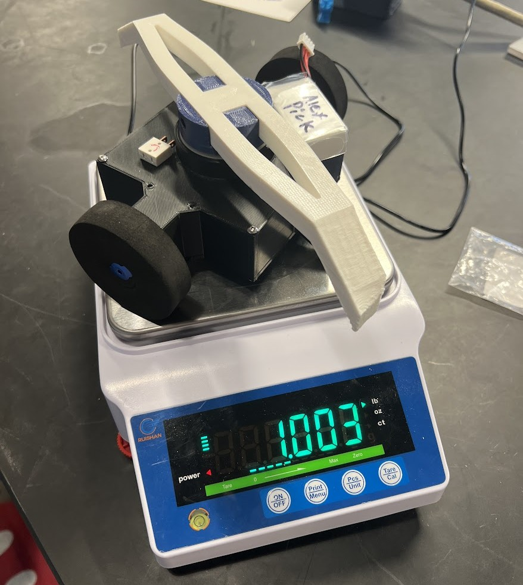
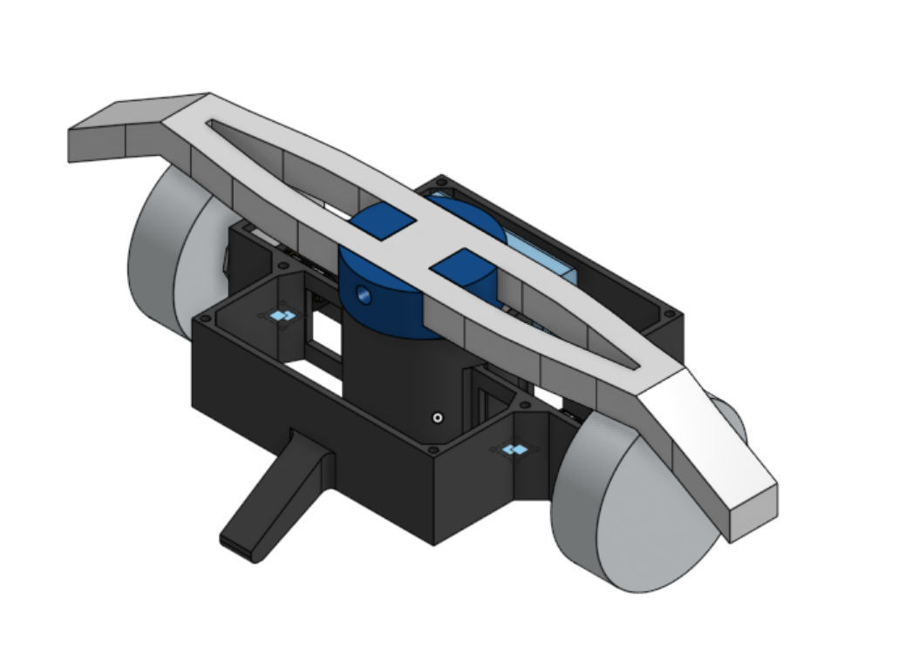
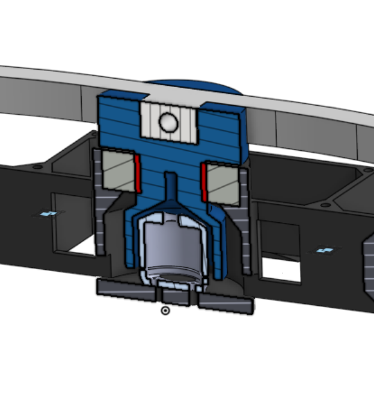

Projects I have worked on for class and in my free time.

"Oingo Boingo" Is a 1lb Plastic Ant (PlAnt) combat bot that was named minutes before its battle.
This was a collaborative effort with Ian Bhatt, Albert Lin, and Peter Molzer, and the first ever robotics project I have ever worked on.
The design process began on a collaborative OnShape file. This design uses two wheels, and two "legs" to keep it upright.
The horizontal propeller is dense, and serves as the weapon. All electronics are stored inside the chassis.

CAD assembly of PlAnt on OnShape, minus the covers
Here, I assisted with the weapon motor shell part of the robot (in blue below). This 3d-printed part fits over the motor with a few milimeters of clearance, and provides a fitted slot for the propeller. I also worked on the part that holds the bearing (in dark grey with light grey hatching).

Cross-section of Oingo Boingo.
Once we put the robot together for the first time and weighed it on the scale, we encountered a problem: Oingo Boingo was a small fraction of a pound over the weight limit with all of its contents. Most of our parts were either non-negotiable (such as electronics), or 3d printed parts that would be difficult to recreate or take too long to reprint. The quickest solution that I came up with and executed was to shave off as much as we could off the chassis walls and retain the thickness on the corners. This part took comparitively less time to reprint and brought Oingo Boingo comfortably below the weight limit.
We battled our robot on April 13, 2024 at the NU Robotics intramural competition and won miraculously against Hole, a ring spinner bot, in an unfortunate yet comical match. Our victory was based solely on the fact that the chassis cover of Hole fell off and exposed electronics led to an immediate DQ. The video of our full match is below.
Unfortunately YouTube videos don't work on iframes anymore. Here is the link to the video while I fix this problem.
One of the our major mistakes that we noticed right off the bat was that our weapon was only able to hit robots that were taller than a certain height. This gave us a massive disadvantage against shorter battlebots. Hole was much shorter than Oingo, leaving our robot in a vulnerable position. Another issue that arose was that Oingo could not move properly while upside down. Some combat robots are designed such that some form of control is achievable when they are flipped over, but we did not integrate that into our robot. When Oingo was flipped over, it was pretty much stuck aside from making a few hilarious maneuvers. Structural integrity was the final one of the major problems with Oingo. The propeller weapon fell out of the slot without much struggle, leaving our robot unable to fight.
If we were to make this robot again, the major revisions I would make would be to bring the COM closer to the floor and create a more sturdy weapon fixture. Making the robot shorter (and making the wheels bigger) would make it possible to drive the robot while it is flipped upside-down. The press-fit for the weapon could be tighter, or we could make the motor shell and weapon the same part.